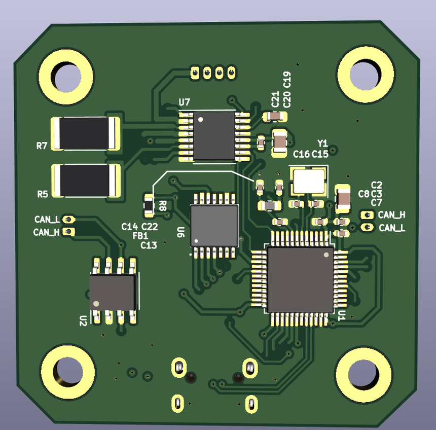

Custom PCB · Motor Control
FOC NEMA17 Stepper Motor Driver


| Board revision | V1.0 |
| Input | 24 V, 2 A rated |
| MCU | STM32F103CBTx (Arm Cortex-M3) |
| Motor driver | TI DRV8844PWPR dual H-bridge, HTSSOP-16 PowerPAD |
| Control scheme | Field-oriented control (FOC), closed loop |
| Position feedback | External magnetic encoder, 4-pin differential header (J5) |
| Current sensing | Dual TI INA181 shunt amplifiers, one per motor phase |
| Bus interface | NXP TJA1051T-3 CAN transceiver |
| Power stage | TPS54202DDC buck converter + AMS1117 LDO for logic rails |
| Protection | PRTR5V0U2X ESD array, SMBJ26A TVS, PMEG6020AELR Schottky, resettable polyfuse |
| Programming | USB Micro-B, BOOT1 / RESET1 buttons for DFU entry |
| Layout | 4-layer, mounted via 4x corner holes for direct NEMA17 fitment |